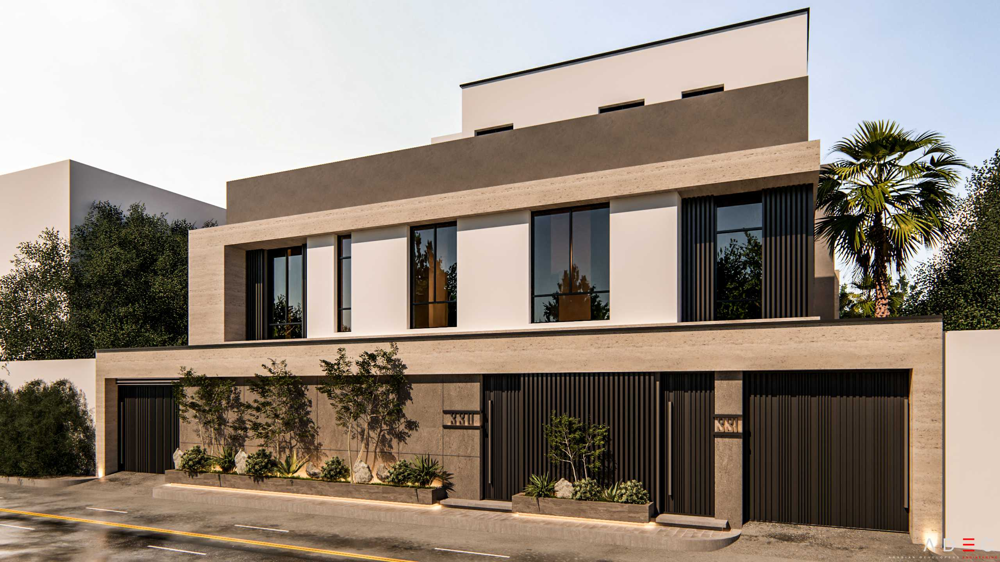
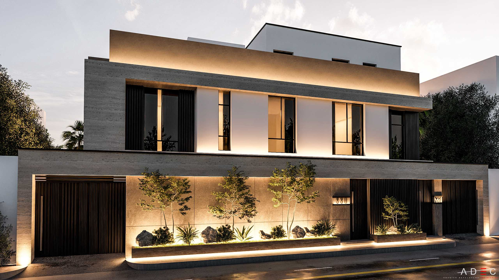

Project Visuals



Project Drawings
Project Overview
A contemporary residential complex in Riyadh, designed as a harmonious blend of modern architecture and luxurious living. The project maximizes its 860 m² site with a structured layout featuring a spacious Main Villa and a separate Annex Duplex, both spanning Ground + 2 Floors. The design prioritizes clean lines, functional space planning, and a seamless connection to the outdoor environment.
Design Concept
The concept revolves around creating a private modern oasis. The architecture employs a minimalist palette of clean geometric forms and neutral tones, contrasted by the organic softness of the landscaped gardens. The layout is carefully zoned to ensure privacy for the family while facilitating entertainment. A key focus was on integrating expansive glazing and outdoor living areas, such as the rear garden seating, to blur the boundaries between the sophisticated interior and the serene exterior.
Architectural Features
- Modern Facade: A composition of crisp white volumes, deep overhangs, and large floor to ceiling windows that flood the interiors with natural light.
- Tiered Outdoor Living: Strategically designed terraces and a central backyard garden with dedicated seating areas create multiple levels of outdoor engagement.
- Contemporary Interiors: Open-plan living spaces with a minimalist aesthetic, high-quality finishes, and a focus on spatial flow and functionality.
- Private Compound: SThe arrangement of the main villa and annex building creates a secure, self-contained private enclave.
My Role
I led the project's design development and documentation from concept to construction readiness.
My key responsibilities included:
- Concept Design & Client Presentation: Generating compelling conceptual 3D visuals and presentations using 3ds Max with V-Ray and Photoshop to secure client approval.
- Permit Approval: Preparing and submitting all necessary architectural drawings for municipal corporation approval using AutoCAD.
- Construction Documentation: Developing comprehensive and detailed construction drawing sets to ensure accurate execution on site.
- Project Coordination: Managing communication and deliverables using MS Office for schedules and reports.
Software Used: AutoCAD, 3ds Max, V-Ray, Photoshop, MS Office